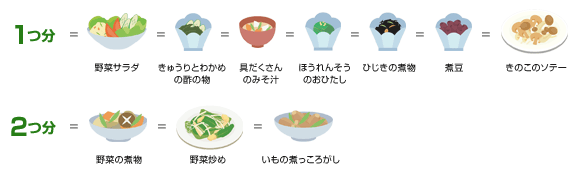
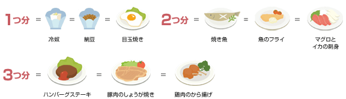
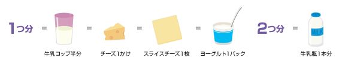
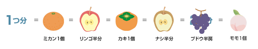

１日に必要な食事量「つ(SV)」
食事バランスガイド

出典：厚生労働省「「食事バランスガイド」について」(2025年12月2日に利用)
（https://www.mhlw.go.jp/bunya/kenkou/eiyou-syokuji.html）
１日に必要な食事量「つ(SV)」単位の解説
「適量チャート」で自分の適量を把握できましたね。では次は主食、副菜、主菜、牛乳・乳製品、果物に書かれている個数について説明します。
これは「１日に必要な食事量」を示しています。単位の量はそれぞれ異なるため、詳しく見ていきましょう。
主食（ごはん、パン、めん類）

炭水化物の供給源である
「ごはん、パン、麺、パスタなど」を主材料とする料理
1つ分の目安：
・ごはん 小盛り1杯（約150g）
・パン 6枚切り1枚
・うどん 1玉（ゆで） など
「ごはん、パン、麺、パスタなど」を主材料とする料理
1つ分の目安：
・ごはん 小盛り1杯（約150g）
・パン 6枚切り1枚
・うどん 1玉（ゆで） など
※1つ(SV)の目安＝穀類由来の炭水化物約40g
副菜（野菜、きのこ、いも、海藻料理）

各種ビタミン、ミネラル、および食物繊維の供給源となる
「野菜、いも、きのこ、海藻」を材料とする料理
1つ分：小鉢1皿（約70g）
「野菜、いも、きのこ、海藻」を材料とする料理
1つ分：小鉢1皿（約70g）
※1つ(SV)の目安＝主に非主食の重量約70g
主菜（肉、魚、卵、大豆料理）

たんぱく質の供給源となる
「肉、魚、卵、大豆および大豆製品など」を主材料とする料理
1つ分：納豆パック1つ、卵1個の料理
2つ分：魚料理1人前
3つ分：肉料理1人前
「肉、魚、卵、大豆および大豆製品など」を主材料とする料理
1つ分：納豆パック1つ、卵1個の料理
2つ分：魚料理1人前
3つ分：肉料理1人前
※1つ(SV)の目安＝主材料に由来するタンパク質約6g
牛乳・乳製品

カルシウムの供給源である
「牛乳、ヨーグルト、チーズなど」
1つ分：牛乳(100ml)、スライスチーズ1枚、ヨーグルト1パック
2つ分：牛乳(200ml)
「牛乳、ヨーグルト、チーズなど」
1つ分：牛乳(100ml)、スライスチーズ1枚、ヨーグルト1パック
2つ分：牛乳(200ml)
※1つ(SV)の目安＝カルシウム約100mg
果物

ビタミンC、カリウムの供給源である
「 リンゴ、ミカン、スイカ、イチゴなど」
1つ分：みかん1個、リンゴ半分、梨半分
「 リンゴ、ミカン、スイカ、イチゴなど」
1つ分：みかん1個、リンゴ半分、梨半分
※1つ(SV)の目安＝果物の重量約100g
その他
● 菓子・嗜好飲料

菓子・嗜好飲料は、コマを回すための「ヒモ」として表現されています。
必ずしもとらなくてもよい菓子・嗜好飲料は、食事の楽しみとして適度にとることが大切です。
1日あたり200kcalくらいを目安にとりましょう
必ずしもとらなくてもよい菓子・嗜好飲料は、食事の楽しみとして適度にとることが大切です。
1日あたり200kcalくらいを目安にとりましょう
● コマの軸にある水、お茶
からだに欠かせない「水・お茶」は、コマの軸として描かれています。